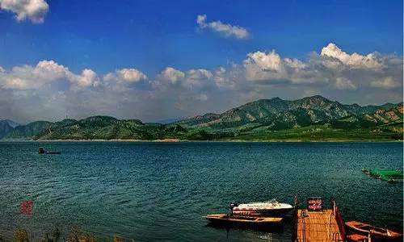
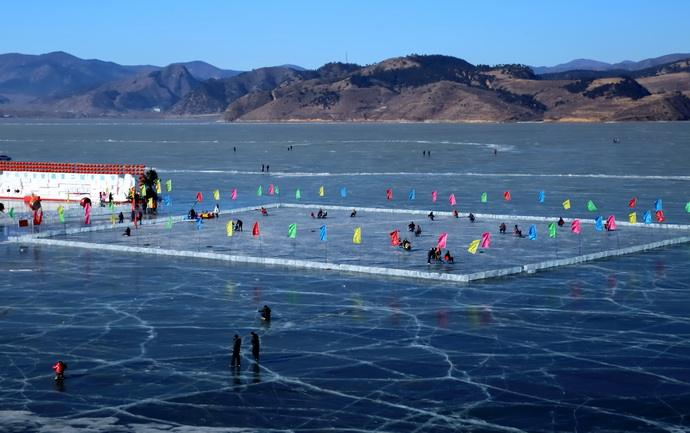

打虎石水库是打虎石塞外度假旅游区的中心。500多米长的拦河大坝建于两山之间，大坝两端用白色石条铺砌的172级台阶可供游人攀援。库区设有游泳场和钓鱼台，游人可在浅滩和规定的深水区域尽情游弋，还可以在备有躺椅，阳伞的钓鱼台尽享垂钓之乐。水库里的鲤鱼，鲢鱼数十万计，重者达30公斤。水库还备有各种机帆船和小木舟供游人乘坐和划桨。打虎石水库除险加固工程于2003年10月经水利部松辽委批复建设，2007年12月开工，2010年10月竣工。
库区两岸是高耸入云的奇峰怪石，有的象海豹出水，有的似鱼跃龙门，有的如鸟雀出巢，有的象银蛇出洞，还有金龟睬蛋，石人立崖，雄猪卧顶，银象饮水等形象逼真，惟妙惟肖的石像。水库南岩山下有一巨石，相传上唐名将李存孝打死猛虎所在，至今石头上的四个虎爪印清晰可见。 卫星照片上能看见“打虎石水库”这几个字 打虎石水库位于宁城县西部，老哈河支流 ── 黑里河下游，控制流域面积540平方公里，总库容1.2亿立方米，是内蒙古自治区境内的以灌溉为主，兼顾防洪、发电、养鱼、旅游等综合利用的大型水库之一，属水利部一级管理单位。 打虎石水库横断黑里河。由于黑里河水流经林区，沿途植被茂密，因此库区蓄水含沙量极低，水体蔚蓝清澈。近6000亩的水面坦荡辽阔，碧波万顷，水天一色。每逢盛夏时节，群山倒影，波澜不惊，鸟飞鱼跃，渔船点点，仿佛人间仙境。 打虎石水库周围环境优美，景色宜人，大自然鬼斧神工，造就了众多的奇峰怪石，著名的有“海豹出水” 、“玉兔望月”、“金龟揽蛋”、“ 罗汉石人”、“乾隆宝座”、“李存孝打虎”等。坝体上，由我国著名书家法李贵民先生题写，并用花岗岩砌成的“打虎石水库”五个大字遒劲、潇洒俊逸。 今天的打虎石已具备了年接待5万游客的能力。建起了打靶场、钓鱼台、招待所、餐馆，购置了快艇游船，为游客提供全方位的服务，是休闲、旅游、度假的最佳场所。 另外在打虎石水库上游设有“漂流”的旅游项目，位置与西泉桥到马圈子桥之间，水流湍急清澈。极其刺激。
